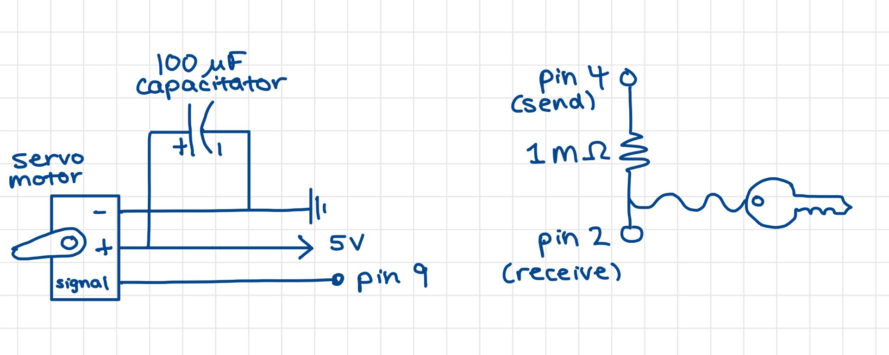
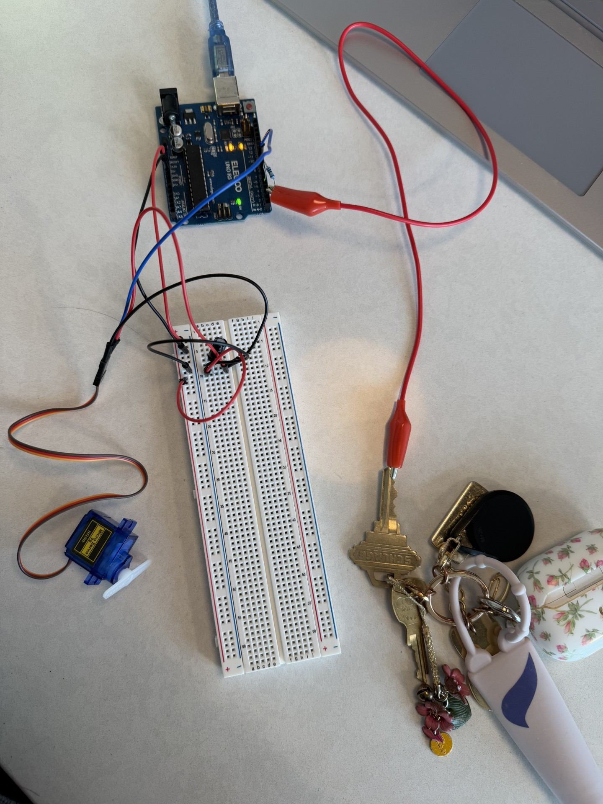
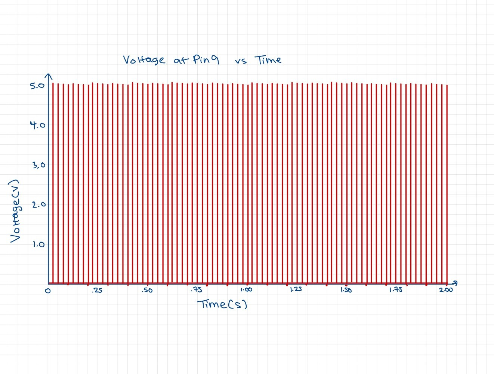

Fig 1: Circuit Schematic
This schematic demonstrates how I set up my servo motor and capacitative touch sensor. I used a 1 megohm resistor between pins 4 and 2 because its high resistance limits the current drawn from the Arduino pin, which helps prevent potential damage from large voltage fluctuations. The 1 megohm resistor also makes it so that absolute touch is required to activate it.
I used a 100 uF capacitator with the servo motor to stabilize the voltage spikes that occur when the servo draws a large current during startup. A 100 uF capacitator was used from the recommendation of Arduino Docs "Servo Motor Basics with Arduino" article.
Fig 2: Circuit Setup
The servo motor is attached to pin 9 while the capacitative touch sensor utilizes pins 2 (senses a change) and 4 (sends electrical energy). I used my house key as the touch sensor.
Fig 3: Input Output GIF

In this video, I'm demonstrating how the servo motor only moves when I am making contact when I am making contact with the key, making 180 degree sweeps back and forth. When I stop touching the key, the motor immediately stops.
Firmware
#include // include Servo library to control the servo motor
#include // include Capacitive Sensor library
Servo myservo; // create a Servo object
CapacitiveSensor capSensor = CapacitiveSensor(4, 2); // pin 4 sends electrical energy and pin 2 senses a change
int threshold = 400; // set threshold for detecting touch
int pos = 0; // store current position of the servo motor
bool movingForward = true; // track movement direction (true = increasing, false = decreasing)
void setup() {
myservo.attach(9); // attach the servo motor to pin 9
Serial.begin(9600); // open a serial connection
}
void loop() {
long sensorValue = capSensor.capacitiveSensor(30); // store the value reported by the sensor in a variable
Serial.println(sensorValue); // print sensor value to serial monitor
if (sensorValue > threshold) { // Check if the touch sensor is activated
if (movingForward) {
pos += 1; // increase servo position by 1 degree
if (pos >= 180) { // if servo reaches 180 degrees
pos = 180; // keep it at 180
movingForward = false; // change direction to move backward
}
} else {
pos -= 1; // decrease servo position by 1 degree
if (pos <= 0) { // if servo reaches 0 degrees
pos = 0; // keep it at 0
movingForward = true; // change direction to move forward
}
}
myservo.write(pos); // move servo to the updated position
delay(15); // small delay to control speed of movement
}
// if the sensor is not touched, the servo holds its last position
}
Additional Questions:
1. Say you are using a servo motor you attach to pin 9. In your loop() you have the following code: for (int i=0, i<180, i++){servo.write(i); delay(100);}.
Draw a graph with the X axis in seconds, for two seconds, and the y-axis the voltage at pin 9 with respect to ground.
The pulse width of a servo motor is around 1-1.5 ms which is why the peaks appear so narrow. During those ~1 ms periods, the voltage goes up to 5V. There is a peak every 20 ms because the servo signal has a 20 ms period, for a total of 100 peaks in a 2 second time period.
2. Your input device is slightly broken, leading it to give us an erroneous reading 1% of the time. How can we address this? Answer in (pseudo)code.
This solution sets an appropriate error range and disregards values that fall out of that range in relation to the average of the last 5 sensor values.
initialize queue with max size = 5
% error = okay error range
function findOutliers():
new_val = readSensor() // read sensor value
add new_val to queue
if queue size > 10:
remove oldest value
avg = avg of values in queue // get average of last 5 readings
// if sensor value is outside of error range, return averaged value
if abs(new_val - avg_val) > error:
return avg
// otherwise return sensor value
else:
return new_val
3. Your input device is slightly noisy, leading the measurement to randomly deviate from the true measurement up or down by 10%. How can we address this? Answer in (pseudo)code.
This solution averages 5 values at a time which smooths out the random deviations of 10%.
initialize queue with max size = 5
function movingAverage():
new_val = readSensor() // read sensor value
add new_val to queue
if queue size > 5:
remove oldest value (FIFO) // keep only last 5 values
return average(queue) // return average of last 5 values